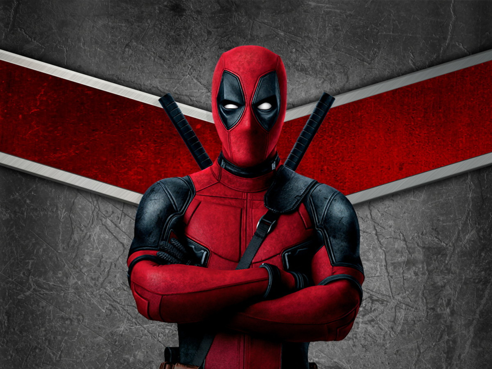

classificação 16 anos
Wade Wilson é um ex-agente especial que passou a trabalhar como mercenário. Seu mundo é destruído quando um cientista maligno o tortura e o desfigura completamente. O experimento brutal transforma Wade em Deadpool, que ganha poderes especiais de cura e uma força aprimorada. Com a ajuda de aliados poderosos e um senso de humor mais desbocado e cínico do que nunca, o irreverente anti-herói usa habilidades e métodos violentos para se vingar do homem que quase acabou com a sua vida.
Data de lançamento: 11 de fevereiro de 2016 (Brasil)
Canção original: Careless Whisper
Música composta por: George Michael, Junkie XL